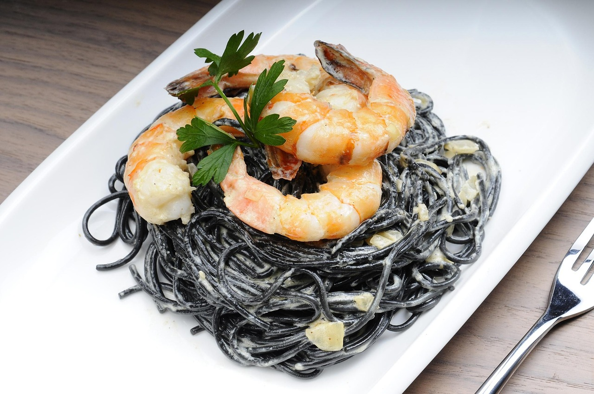

Spaghetti mit Garnelen in Sahnesauce
| 150g Spaghetti |
| 125g Garnelen |
| 50ml Becher Sahne |
| 50ml passierte Tomaten |
| 1 Knoblauchzehe(n) |
| ¼ Zwiebel(n) |
| etwas Salz und Pfeffer |
| etwas Basilikum |
| Topf Salzwasser für die Spaghetti Nudeln |
Zubereitung
Die Spaghetti nach Packungsanweisung im Salzwasser kochen. Die Zwiebeln klein schneiden und in eine Pfanne geben. Die Zwiebeln auf mittlerer Hitze anschwitzen. Nach ca. 5 Minuten die Shrimps hinzugeben und von beiden Seiten 3 Minuten auf höhere Stufe braten. Die Garnelen mit Pfeffer, Salz und Basilikum würzen. Anschließend die klein geschnittene Tomate und den Becher Sahne dazugeben. Die fertigen Spaghetti abgießen, zu den anderen Zutaten in die Pfanne geben und noch ein paar Minuten mitbraten. Nach ca. 3 Minuten ist das Gericht fertig.
Rezept erstellt von
 Ellen Santos
Ellen Santos